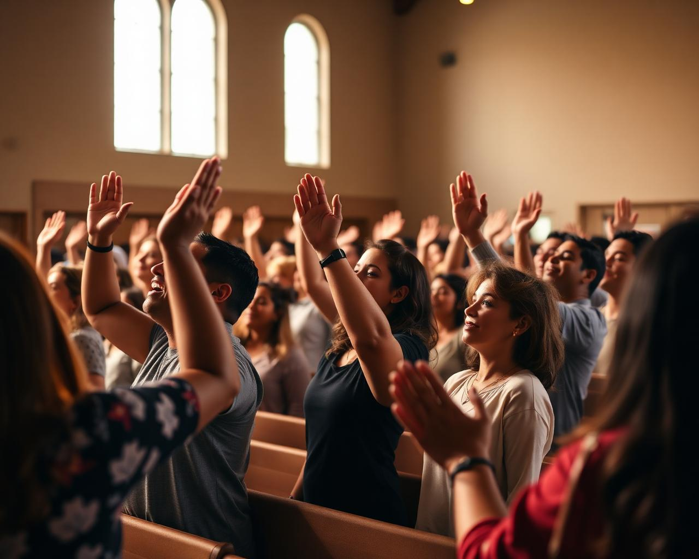

I
Humildade
Reconhecer que dependemos de Deus e dos irmãos. O orgulho separa; a humildade aproxima e desarma conflitos antes mesmo que nasçam.
“Para que todos sejam um, como tu, ó Pai, o és em mim, e eu, em ti; que também eles sejam um em nós.” — João 17:21
Na última noite antes de Sua morte, Jesus levantou os olhos ao céu e fez aquela que ficou conhecida como Sua oração sacerdotal. No coração desse pedido pulsava um único anseio: que os Seus discípulos fossem um. Não uma união superficial de aparências, mas a mesma comunhão que existe entre o Pai e o Filho.
Essa unidade não é um detalhe da vida cristã — é, segundo o próprio Cristo, o maior testemunho que a Igreja pode oferecer ao mundo. É por ela que as pessoas crerão que o Pai enviou o Filho. Quando os filhos de Deus se amam e se mantêm unidos, o evangelho ganha credibilidade diante de uma humanidade dividida.
Este estudo nos convida a redescobrir esse chamado: aprender as atitudes que cultivam a unidade, identificar o que a destrói e fixar em Cristo — a verdadeira Videira — o elo que nos sustenta como Corpo.
“Eu sou a videira, vós, os ramos.” — João 15:5
Quando Jesus orou por Seus seguidores, Ele não pediu primeiramente por sucesso, multidões ou estrutura. Ele pediu por unidade. E ligou diretamente essa unidade à missão: “para que o mundo creia que tu me enviaste” (João 17:21).
O testemunho mais poderoso que a Igreja pode dar não está nos sermões eloquentes nem nas grandes campanhas — está no amor visível entre os irmãos. Uma comunidade unida é uma carta viva, lida por todos os homens (2 Coríntios 3:2).
Ellen G. White afirma que “a união entre os seguidores de Cristo é uma evidência poderosa de que o Pai O enviou ao mundo”. Onde há unidade, o Espírito Santo se manifesta com plenitude — como aconteceu em Pentecostes, quando os discípulos estavam “unanimemente reunidos no mesmo lugar” (Atos 2:1).
Eu neles, e tu em mim, para que eles sejam aperfeiçoados na unidade, a fim de que o mundo conheça que tu me enviaste e os amaste como também amaste a mim. João 17:23
Paulo apresenta um “manual prático” da convivência cristã. São virtudes que, quando vividas, blindam a comunhão contra as fissuras do egoísmo.
Reconhecer que dependemos de Deus e dos irmãos. O orgulho separa; a humildade aproxima e desarma conflitos antes mesmo que nasçam.
Força sob domínio. É a capacidade de responder com calma onde se poderia revidar — espírito que reflete o caráter de Cristo.
Paciência longa, que suporta as imperfeições do outro sem desistir do relacionamento. É amor que persevera no tempo.
Aceitar o irmão como ele é, cobrindo faltas com graça em vez de expô-las. Tolerância que nasce do mesmo amor que Deus tem por nós.
Esforço ativo — não passivo — para guardar a unidade do Espírito “pelo vínculo da paz”. Buscar a reconciliação é uma escolha diária.
“Rogo-vos que andeis de modo digno da vocação a que fostes chamados, com toda a humildade e mansidão, com longanimidade, suportando-vos uns aos outros em amor.”
A videira sustenta cada ramo; sem ela, nenhum fruto.
Quem é, afinal, o principal elo que une os membros da Igreja? Não é a cultura, nem o calendário, nem mesmo a mesma denominação. É Cristo. Ele mesmo disse: “Eu sou a videira, vós, os ramos. Quem permanece em mim e eu, nele, esse dá muito fruto; porque sem mim nada podeis fazer.” (João 15:5)
Cada ramo só se mantém vivo enquanto está ligado ao tronco. Da mesma forma, cada cristão só permanece em unidade com os demais quando está ligado a Cristo. É a seiva — o Espírito Santo — que flui da Videira que produz o amor mútuo entre os ramos.
Por isso, antes de buscarmos a unidade horizontal (entre irmãos), precisamos cuidar da unidade vertical (com Cristo). Comunhão diária com Ele através da oração, do estudo da Bíblia e da obediência é o que nos mantém colados ao Tronco — e, consequentemente, uns aos outros.
Jesus não deixou aos Seus seguidores uma lista de regras de etiqueta. Deixou um padrão: o Seu próprio amor. Um amor que se entrega, que serve, que perdoa, que vai até a cruz.
“Ninguém tem maior amor do que este: de dar alguém a própria vida em favor dos seus amigos” (João 15:13). Essa é a régua. O relacionamento entre os discípulos deve ser marcado por sacrifício mútuo, lealdade e cuidado genuíno — não por interesse, comparação ou competição.
É por esse amor — e não por crachás, doutrinas decoradas ou tradições — que o mundo reconhecerá os verdadeiros discípulos de Cristo: “Nisto conhecerão todos que sois meus discípulos: se tiverdes amor uns aos outros” (João 13:35).
O que vos mando é isto: que vos ameis uns aos outros. João 15:17

Adoração em comunhão: o amor mútuo torna-se visível.
A Bíblia é direta ao apontar o que rasga a unidade da Igreja. Conhecer esses perigos é o primeiro passo para resistir a eles.
“Os homens serão amantes de si mesmos…” (2 Tm 3:2). Quando o “eu” ocupa o centro, não sobra espaço para o irmão.
O apego ao dinheiro e ao prestígio gera disputas e rachaduras na comunidade (2 Tm 3:2).
Vangloriar-se afasta. Onde há soberba, há contenda; onde há humildade, há sabedoria.
Línguas que difamam destroem reputações e quebram a confiança que mantém os irmãos juntos.
“Onde há inveja e sentimento faccioso, aí há confusão e toda espécie de cousas ruins.” (Tg 3:16)
Não reconhecer o bem recebido endurece o coração e enfraquece os laços fraternos (2 Tm 3:2).
Sem afeto natural e sem disposição para perdoar, a Igreja se torna fria — e a frieza isola.
“De onde procedem guerras e contendas entre vós? De onde, senão dos prazeres que militam na vossa carne?” (Tg 4:1)
“Tendo forma de piedade, negando-lhe, contudo, o poder” (2 Tm 3:5). Aparência sem o Espírito não sustenta unidade.
“Oh! como é bom e agradável viverem unidos os irmãos!”
Verso para memorizar e recitar — coração desta especialidade.
O Salmo 133 compara a unidade fraterna a duas imagens preciosas para Israel: o óleo sagrado derramado sobre Arão, símbolo da consagração e da presença do Espírito Santo; e o orvalho do Hermom, símbolo de vida, frescor e bênção contínua. Onde os irmãos vivem unidos, ali o Senhor ordena a Sua bênção — e a vida eterna (Sl 133:3).
Rogo-vos, irmãos, pelo nome de nosso Senhor Jesus Cristo, que faleis todos a mesma cousa e que não haja entre vós divisões; antes, sejais inteiramente unidos, na mesma disposição mental e no mesmo parecer. 1 Coríntios 1:10
Quando Paulo escreveu à dividida igreja de Corinto, ele apontou para uma atitude central: buscar a mesma mente, o mesmo sentir, em Cristo. Não se trata de uniformidade — todos pensando exatamente igual sobre tudo — mas de uma só direção do coração: a vontade de Deus acima das preferências pessoais.
Essa atitude se traduz em três gestos diários:
Compartilhar essa verdade com um amigo — em casa, na escola, na unidade de Desbravadores — é um ato missionário poderoso. A unidade não começa “na igreja inteira”; começa em duas pessoas dispostas a viver o amor de Cristo.